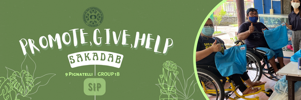
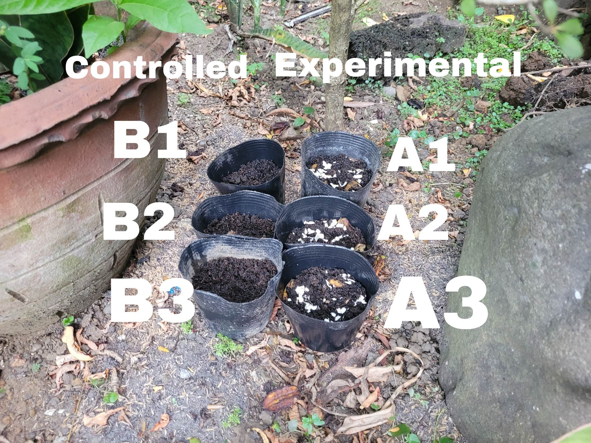
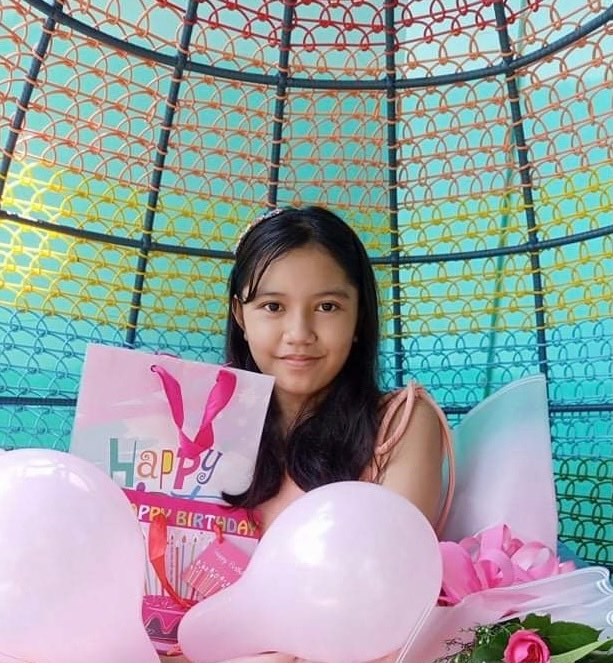

SIP CONTENT

In the midst of this pandemic, many people have been buying more resources in the grocery lately unlike before.
More items are sold out for the sake of the safety of everyone in the household, which includes food resources such
as vegetables in which the price is expensive and gives a hole to the wallets of our parents, especially to the
SAKADAB. Before we know what the importance of the study is all about, we must learn alot on how compostable
fertilizer is a good alternative to make plants grow tall faster. This value of composting to the communities
and the environment is that we learn how to reuse materials that we throw alot. Instead of throwing such materials,
we can reuse them for the sake of the environment. So, me and my team made an experiment on using dried banana
peels and crushed eggshells on tomato seeds as an alternative to fertilizer in order to make use of the compost
we get from food we eat to avoid wasting such material. In this way, we can earn food resources at an affordable
price due to the materials needed being cheaper than groceries overall. The institution such as the SAKADAB can
benefit from composting especially from our project by receiving the crops that we will plant through our experiment,
they may also follow such art of composting if they can. This is because the people in the SAKADAB have been facing
financial problems especially in this pandemic. Instead of paying thousands of pesos in groceries, they can spend
less in buying gardening materials and in reusing compost as fertilizer.
Experimenting
Statement Of The Problem
Will the mixture of dried banana peels and eggshells boost the height increase rate and number of leaves of a tomato plant?
Hypothesis
If we use crushed eggshells and dried banana peels as a fertilizer to tomato plants, then the height increase rate and
number of leaves of the tomato plants will increase faster.
Variables
Controlled Variables - Location of experiment, pots used throughout experiment, type of water used, amount of water given, amount of sunlight given
Independent Variable - Usage of banana peels and crushed eggshell mix as fertilizer
Dependent Variables - Height increase rate of the tomato plant, number of leaves of tomato plant
Eggshells for plants | Eggshells for Tomatoes | About Banana Peels | More Banana Peels
ABOUT THE WEB DESIGNER

Yelena Krysh T. Jamonir is a Gr. 9 High School Student of Ateneo de Davao Junior High School and one of the members of Group 1B - St. Pignatelli.
She is a quiet yet bright person who's passion is creativity and have a brain of artistic ideas.
Her artistic ideas help bring creative works and designs for school projects and group tasks.
Not only she has such an artistic side, she also has her morals who is looking forward to assist others in any kind of help needed.
She may be quiet, but she has a creative personality and a good heart. For the PGH, she is known to make the promotional designer for the group.